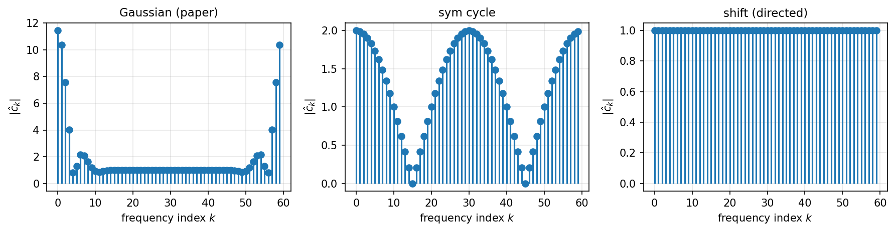
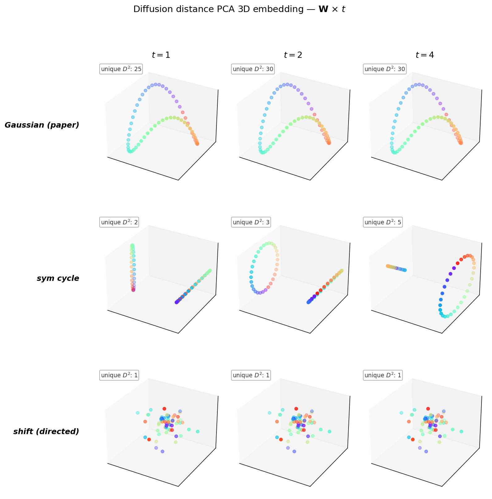

연구 ▷ HST ▷ Circulant W의 스펙트럼과 distance의 강건성
0. 동기: “순환행렬로 바꿔봐도 결과가 같을까?”
논문 예제2(링 60점, \(f_1=0\) 과 \(f_2=\pm 3\) 두 신호)에서 그래프 가중치 \(\mathbf{W}\)는 Gaussian 커널
\[\mathbf{W}_{ij} = \exp\!\left(-\frac{\Sigma_{ij}^2}{2\theta^2}\right) - \delta_{ij}, \qquad \Sigma_{ij} = \|v_i - v_j\|^2,\ \theta=0.35\]
로 주어져 있다. 링 위의 점이라 \(\Sigma_{ij}\)가 \(|i-j|\,\mathrm{mod}\,n\)에만 의존하고, 따라서 이 \(\mathbf{W}\)는 이미 순환행렬(circulant) 이다.
그렇다면 \(\mathbf{W}\)를 다른 순환행렬로 바꿔도 distance embedding (Euclidean / diffusion / snow)이 같은 구조를 복원할까? 구체적으로, 고유벡터가 DFT 기저인 “그 행렬” — 즉 cyclic shift matrix \(\mathbf{S}\) (\(\mathbf{S}_{i,i+1\bmod n} = 1\), 나머지 \(0\)) — 로 극단화해보면 무엇이 살아남고 무엇이 무너지는가?
요지. 세 distance 중 diffusion distance 만이 \(\mathbf{W}\)의 스펙트럼에 강하게 의존한다. Shift matrix는 모든 고유값 크기가 1이라 diffusion이 완전히 퇴화해 정보를 잃는다. 반면 snow distance는 nonlinear flow/block 규칙 덕분에 스펙트럼 퇴화와 무관하게 링 순서를 복원한다. HST의 “graph structure를 본다”는 주장이 spectral-robust 한 의미에서 정량적으로 드러나는 예시다.
1. 세 가지 circulant
세 후보를 병렬 비교한다. 모두 \(n=60\), 첫 열 \(\mathbf{c}\in\mathbb{R}^n\)로 정의되는 \(\mathbf{W} = \mathrm{circulant}(\mathbf{c})\), 즉 \(\mathbf{W}_{ij} = c_{(i-j)\bmod n}\).
| 이름 | 첫 열 \(\mathbf{c}\) | 대칭성 | 희소성 |
|---|---|---|---|
| 논문 \(\mathbf{W}_{\mathrm{Gauss}}\) | \(c_k = \exp(-\Sigma_{0,k}^2/2\theta^2)\) (대각 제외) | 대칭 | 1.7% 0 |
| 대칭 cycle \(\mathbf{W}_{\mathrm{cyc}}\) | \(c_1 = c_{n-1} = 1\), 나머지 0 | 대칭 | 96.7% 0 |
| shift \(\mathbf{S}\) | \(c_{n-1} = 1\), 나머지 0 | 비대칭 | 98.3% 0 |
Shift matrix는 \(\mathbf{S}_{i,i+1\bmod n} = 1\) 하나만 가진 순수 permutation 행렬이다.
2. 공통점: DFT 기저가 고유벡터
사실. 모든 \(n\times n\) circulant \(\mathbf{W}\)는 DFT 행렬 \(\mathbf{F}\) (\(F_{jk} = \tfrac{1}{\sqrt{n}}\omega^{jk}\), \(\omega = e^{-2\pi i/n}\))에 의해 대각화된다:
\[\mathbf{W} = \mathbf{F}\,\mathrm{diag}(\hat{\mathbf{c}})\,\mathbf{F}^*\]
여기서 \(\hat{\mathbf{c}} = \mathbf{F}\mathbf{c}\)는 첫 열의 DFT — 고유값의 열벡터다.
따라서 세 candidate의 고유벡터는 모두 같다 (DFT 기저). 차이는 오직 고유값 \(\hat{c}_k\)에만 있다.
3. 차이점: 고유값 스펙트럼
\(n=60\)에서 수치로 확인하면:
| 행렬 | 최대 \(|\lambda|\) | 최소 \(|\lambda|\) | 실수? | 해석 |
|---|---|---|---|---|
| Gaussian | 11.45 | 0.81 | ✓ | 저주파 집중, 고주파 급감쇠 (Gaussian의 FT) |
| sym cycle | 2.00 | 0.00 | ✓ | \(\lambda_k = 2\cos(2\pi k/n)\) — \([-2,2]\)에 분산 |
| shift \(\mathbf{S}\) | 1.00 | 1.00 | ✗ | 단위원 위 \(\omega^k\), 모두 크기 1 |

해석. 세 스펙트럼은 “random walk의 smoothing 강도”를 결정한다. Random walk transition \(\mathbf{P} = \mathbf{W}/\mathrm{rowsum}\)도 circulant이므로 DFT로 대각화되며, \(\mathbf{P}^t\)의 고유값은 \(\hat{p}_k^t\)다.
- Gaussian \(\mathbf{W}\): \(\hat{p}_k\)가 \(k=0\)에서 1, 나머지 빠르게 작아짐 → \(\mathbf{P}^t\)가 빠르게 DC 모드(균일분포)로 수렴.
- sym cycle: \(\hat{p}_k = \cos(2\pi k/n)\) — 매우 천천히 수렴, \(k=n/2\)에서 \(\hat{p}_{n/2} = -1\) → parity 문제.
- shift \(\mathbf{S}\): \(\hat{p}_k = \omega^k\), \(|\hat{p}_k| = 1\) 전부 → 절대 수렴 안 함, 순수 phase rotation.
4. Diffusion distance의 spectral 의존성
Diffusion distance는 \(t\) 스텝 후 분포의 \(L^2\) 차이
\[\mathrm{DD}^2(i,j) = \|\mathbf{P}^t(i,\cdot) - \mathbf{P}^t(j,\cdot)\|^2\]
로 정의된다. Circulant에서는 Parseval로
\[\mathrm{DD}^2(i,j) = \sum_{k} |\hat{p}_k|^{2t}\,|F_{ik} - F_{jk}|^2 = \sum_k |\hat{p}_k|^{2t}\cdot 2\left[1-\cos\!\left(\tfrac{2\pi k(i-j)}{n}\right)\right]\]
즉 \(\mathrm{DD}^2\)는 스펙트럼 가중 이중 코사인 합이다. 가중치 \(|\hat{p}_k|^{2t}\)가 distance의 discriminating power를 결정한다.
4.1 Shift matrix에서의 완전 퇴화
Shift에서는 \(|\hat{p}_k| = 1\) 전부이므로 \(|\hat{p}_k|^{2t} = 1\). 합이 \((i-j)\)에 대한 순수 Fourier 합이 되는데, Parseval로
\[\sum_{k=0}^{n-1} 2\left[1-\cos\!\left(\tfrac{2\pi k m}{n}\right)\right] = 2n - 2n\delta_{m,0} = \begin{cases} 0, & m = 0 \\ 2n, & m \neq 0 \end{cases}\]
즉 \(i \neq j\)인 모든 쌍이 정확히 같은 거리 \(\mathrm{DD}^2 = 2n\). PCA 관점에서는 \(n\)개의 점이 \((n-1)\)-simplex 꼭짓점에 박힌 꼴 — 선호할 축이 없어 3차원 투영은 무작위처럼 보인다.
\(n=3\) 구체 예시 (구현과 일치):
P^4 = P (주기 3) 의 세 행:
행 0 = [0, 1, 0] ← "노드 0 에서 4 스텝 후 무조건 1"
행 1 = [0, 0, 1] ← "노드 1 에서 4 스텝 후 무조건 2"
행 2 = [1, 0, 0] ← "노드 2 에서 4 스텝 후 무조건 0"
행간 squared L2: D²[i,j] = 2 (모든 i≠j), 0 (i=j)Walker가 결정론적이라 분포가 항상 delta 함수 — 두 delta의 \(L^2\) 거리는 지지점이 다르기만 하면 항상 \(\sqrt{2}\). 정보량 0.
4.2 sym cycle에서의 parity 문제
sym cycle에서 \(\hat{p}_k = \cos(2\pi k/n)\). \(t=4\)(논문 기본값)일 때 \(|\hat{p}_{n/2}|^{2t} = 1\)로 여전히 크며, 홀수 \(k\)의 기여가 짝수 \(k\)와 간섭한다. 실제로 \(\mathbf{P}^4\)는 parity-보존 마르코프 — 노드 0에서 출발하면 4스텝 후 \(\{0,\pm 2,\pm 4\}\) (모두 짝수)에만 존재. 결과:
- 짝수 노드끼리, 홀수 노드끼리는 링 순서가 거리로 인코딩됨
- 짝수-홀수 쌍은 지지점 교집합이 공집합 → 최대 거리로 일정
PCA는 이 이분 구조를 최상위 축으로 잡고 각 parity class가 별도의 작은 링을 그린다. “큰 링 + 앞쪽 cluster” 처럼 보이는 전형적 결과.
4.3 논문 Gaussian에서는 왜 잘 작동하나
Gaussian \(\mathbf{W}\)에서 \(\hat{c}_k\)는 \(k\)에 대해 Gaussian-decay, 따라서 \(|\hat{p}_k|^{2t}\)는 몇 개의 저주파 모드만 크고 나머지는 빠르게 0. \(\mathrm{DD}^2(i,j)\)가 저주파 몇 개의 코사인 차로 근사되며 이는 링 거리의 부드러운 함수. PCA로 2~3 축만 잡아도 링을 복원한다.
핵심 관찰. Diffusion distance의 discriminating power = “중간 주파수 모드의 생존”. 스펙트럼이 완전 균일(\(\mathbf{S}\))이거나 parity-edge가 살아있으면(\(t=4\)인 cyc) 실패한다.
4.4 \(t\)를 바꿔도 spectral failure는 못 구한다
흔한 반문: “\(t=4\) 말고 \(t=1\) 이나 \(t=2\)를 쓰면 달라지지 않나?” — 수치로 확인하면 shift는 어떤 \(t\)에서도 퇴화, cycle은 \(t\)를 키울수록 미세해짐, Gaussian은 \(t\)에 거의 둔감.
| 행렬 | \(t=1\) (unique \(D^2\)) | \(t=2\) | \(t=4\) |
|---|---|---|---|
| Gaussian | 22 | 30 | 30 |
| sym cycle | 2 | 3 | 5 |
| shift | 1 | 1 | 1 |

- shift: \(|\hat{p}_k| = 1\)이 \(t\)-제곱으로도 그대로라 discriminating power가 근본적으로 0. \(t\) 조절로 해결 불가.
- sym cycle at \(t=1\): 이웃 2개만 반영되므로 “바로 앞 2칸 떨어진 쌍 vs 나머지”의 이진 구분만 됨. \(t\)를 키워야 walker 분포가 더 퍼지며 링 거리가 세분화됨. 단, \(t\)가 짝수로 넘어가는 순간 parity 구조가 끼어들어 단순 ring이 아닌 이분 ring이 나타남(\(t=4\) 패널).
- Gaussian: 이미 첫 스텝부터 링 전체를 덮으므로 \(t\) 키워봤자 미세 조정뿐. \(t\)에 robust.
결론: \(t\) 조절은 spectrum shape을 바꾸지 못한다 (\(\hat{p}_k^t\)는 \(\hat{p}_k\)의 단순 함수). 스펙트럼이 퇴화한 그래프에선 diffusion distance가 원천적으로 정보를 못 뽑는다.
5. Snow distance는 왜 다른가
Snow distance는 \(\mathbf{W}\)를 마르코프 체인으로 변환한 뒤 flow/block 규칙으로 non-linear state-dependent dynamics를 돌린다. 핵심: 같은 노드 \(i\)에서 다음 노드 \(i'\)로 가는 step이 snow 또는 block 중 어느 것이 되는가는 “현재 \(\mathbf{Z}(t)\)의 값” 에 의존하는 비선형 규칙이다:
\[\text{snow deposit at } i':\ \ Z_{i'}(t+1) = Z_{i'}(t) + b\cdot\mathbf{1}\{Z_i(t) \geq Z_{i'}(t)\}\]
(block일 경우 walker가 \(\boldsymbol{\mu}_0\)로 재생되며 \(Z_i\)에 \(b\) 쌓임.)
5.1 Shift matrix에서도 살아남는 메커니즘
Shift에서는 \(\mathbf{P}\)가 deterministic이라 walker 궤적이 \(0 \to 1 \to 2 \to \cdots\) 고정이다. 그럼에도 snow distance가 살아남는 이유:
- 초기조건 \(\mathbf{y} = \mathbf{f}\)가 flow/block 분기를 가른다. \(f_2 = \pm 3\)의 경우, walker가 \(+3\) 노드에서 \(-3\) 노드로 이동하려는 순간 \(Z_i = +3 \geq Z_{i'} = -3\)는 flow, 반대 방향은 block. 이 비대칭이 \(\mathbf{Z}(t)\)에 구조적 흔적을 남긴다.
- 재생(block)의 랜덤성이 결정론적 궤적을 깬다. \(\boldsymbol{\mu}_0\)(대개 uniform)에서 다시 뽑히므로 “한 번 회전한 궤적”이 여러 번 중첩되며 각 노드별 누적 \(Z_i(t)\)가 달라진다.
- \(f_1 = 0\) 같은 trivial 신호에서도 block이 가끔씩 발생하면 walker 재시작 지점에 따라 링을 따라 위치의존 편차가 생긴다. 관측된 figure에서 (a) 패널이 매끄러운 3D 호로 링 순서를 복원하는 이유다.
5.2 Linear vs nonlinear
이 차이는 구조적이다:
| 질문 | Diffusion | Snow |
|---|---|---|
| Dynamics | \(\mathbf{Z}(t) = \mathbf{P}^t\mathbf{Z}(0)\) (선형) | \(\mathbf{Z}(t+1) = \mathbf{Z}(t) + b\cdot\mathbf{1}\{\cdots\}\) (비선형) |
| 정보원 | \(\mathbf{W}\)의 spectral decomposition | \(\mathbf{W}\)의 topology + \(\mathbf{Z}\) 경계면 |
| 실패 조건 | 스펙트럼 퇴화 (\(|\hat{p}_k|\) 균일) | 없음 (어느 circulant 에서도 작동) |
Diffusion은 “많이 걷는다 → 분포가 어떻게 퍼지나”를 본다. Shift에서는 walker가 단 한 점에 모여 있어 분포가 항상 delta → 볼 게 없다. Snow는 “걷는 과정에서 무엇이 block 되나”를 본다. Block 경계면은 \(\mathbf{Z}\)의 level set이며 linear spectrum에 종속되지 않는다.
6. 실험: directed shift에서의 figure 5
스크립트 260424_예제2재현_순환행렬.py, \(\tau = 10^5\):
PYHST_CIRC=directed python 260424_예제2재현_순환행렬.py산출물: results/figure5_circulant_directed.png
{kind=link}
| 행 | (a) \(f_1 = 0\) | (b) \(f_2 = \pm 3\) |
|---|---|---|
| Euclidean | 완전 퇴화 (\(f=0\)) | 두 클러스터로 분리 |
| Diffusion | 모든 쌍 \(D^2 = 2n\) — 단일 값 | 동일 (diffusion은 \(\mathbf{W}\)만 의존) |
| Snow | 매끄러운 3D 호로 링 순서 복원 | 두 개의 휜 호로 반원 분리 |
Euclidean과 diffusion이 둘 다 무너지는 (a) 열에서 snow만 유일하게 링 구조를 복원한다. 이는 논문의 정성적 주장 — “snow distance는 graph structure를 본다” — 이 스펙트럼 퇴화에 대한 강건성이라는 구체적 의미를 가진다는 증거다.
7. 논의와 열린 문제
7.1 요약
- 세 circulant(\(\mathbf{W}_{\mathrm{Gauss}}\), sym cycle, shift \(\mathbf{S}\))는 DFT 기저를 공유하지만 스펙트럼 \(\hat{\mathbf{c}}\)가 완전히 다르다.
- Diffusion distance의 discriminating power는 \(|\hat{p}_k|^{2t}\)의 비균일성에 선형적으로 의존. 스펙트럼 평탄하면 퇴화.
- Snow distance는 \(\mathbf{Z}\)의 level set을 읽는 non-linear 구조라 스펙트럼 형상과 무관.
- 결과: shift matrix처럼 diffusion이 완전히 실패하는 극단 케이스에서도 snow는 링 순서를 복원.
7.2 열린 문제
Q1. Snow distance의 “discriminating power”를 \(\mathbf{W}\)와 \(\mathbf{f}\)의 어떤 양으로 정량화할 수 있는가? Diffusion의 \(|\hat{p}_k|^{2t}\)에 대응되는 snow 측의 invariant 은?
Q2. Shift에서의 snow distance가 복원하는 링 순서는 어떤 의미의 거리인가? “Walker 궤적상 인덱스” 인가, “block 발생 패턴의 확률” 인가?
Q3. 본 실험의 (b) 결과에서 두 호의 상대 배치는 \(\boldsymbol{\mu}_0\)(초기분포)에 어떻게 의존하는가? Uniform과 non-uniform \(\boldsymbol{\mu}_0\)를 비교하면 새 구조가 드러날 가능성.
Q4. Circulant가 아닌 일반 그래프에서도 같은 spectral/nonlinear 이분법이 유효한가? Non-regular 또는 방향 그래프에서는 \(\mathbf{P}\)가 DFT로 대각화되지 않으므로 분석이 달라지지만, non-linear 부분의 강건성은 보존될 것이라 기대한다.
7.3 실용적 함의
Graph Laplacian 기반 방법 (spectral clustering, diffusion maps, GCN의 message passing)은 모두 스펙트럼에 선형 종속이다. 본 실험은 이 계열이 failure mode (permutation-like graph)에서 무너진다는 사실을 분명히 한다. 반면 HST는 level-set dynamics 라는 비선형 메커니즘을 통해 그 기각 경계를 확장한다. 이는 graph signal processing에서 snow process가 갖는 독립적 가치다.